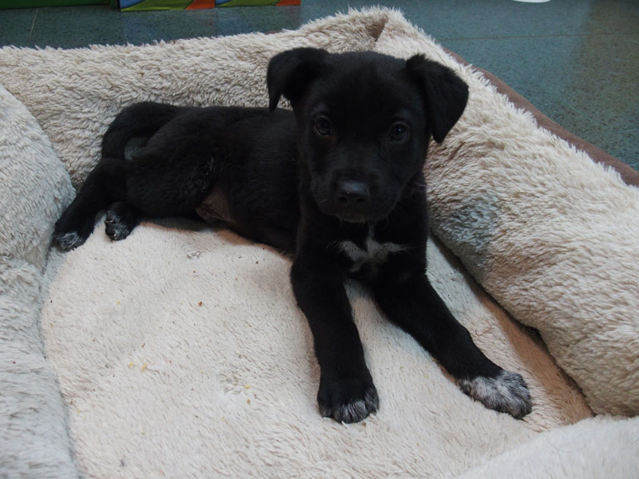
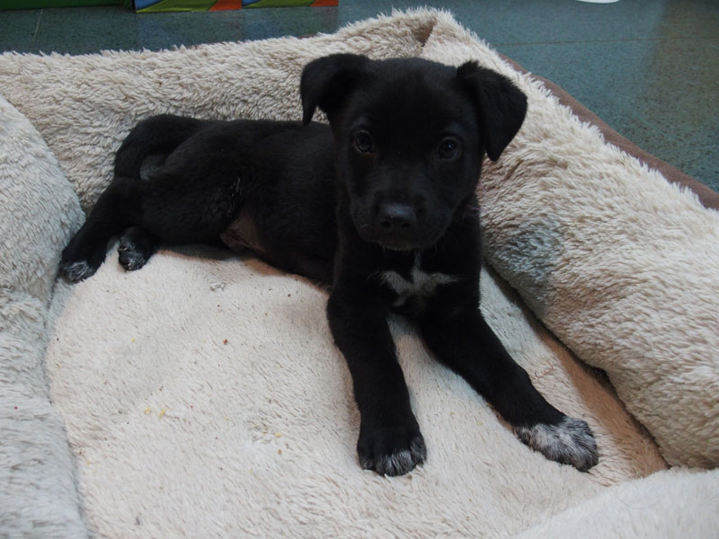

| Imagen | Nombre | Color | Raza | Edad | Esterilizado | Nro Chip |
|---|---|---|---|---|---|---|
|  | Cholo | Negro | Mestizo | 7 Meses | Sí | 10012 |
 |
Scott | Café/Negro | Pastor Alemán | 1 Año 2 Meses | Sí | 20021 |
| Rocky | Café Claro | Labrador | 4 Meses | Sí | 30021 |
| Imagen | Nombre | Color | Raza | Edad | Esterilizado | Nro Chip |
|---|---|---|---|---|---|---|
|  | Cholo | Negro | Mestizo | 7 Meses | Sí | 10012 |
| |
Scott | Café/Negro | Pastor Alemán | 1 Año 2 Meses | Sí | 20021 |
| Rocky | Café Claro | Labrador | 4 Meses | Sí | 30021 |